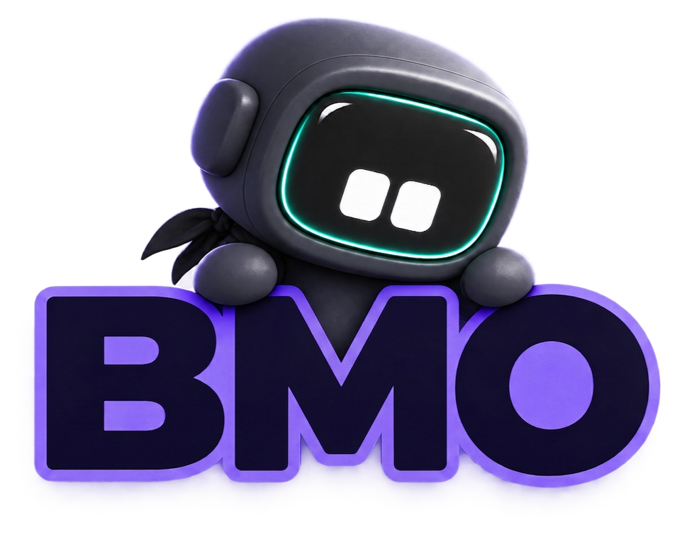

R1Pendiente
¿La laptop no recibe corriente?

Modo manual
¿La laptop no recibe corriente?
¿Tiene corriente, pero no enciende?
¿Enciende, pero no muestra imagen?
¿Enciende y muestra imagen?
Responde los cuatro casos con Sí, No o Pendiente. BMO reconocerá una regla solo cuando marques Sí.
Resultado
Responde cada caso con Sí, No o Pendiente para generar un diagnóstico.
Ruta del diagnóstico
Responde las cuatro reglas
Revisar alimentación
PENDIENTERevisar encendido
PENDIENTERevisar video
PENDIENTEEstado objetivo
PENDIENTEEstado inicial: falta observar los hechos.
Motor de inferencia
BMO enviará las cuatro respuestas al predicado diagnostico/6 cuando pulses «Analizar caso».
diagnostico/6 · esperando?- diagnostico(Equipo, Respuestas, Regla, Resultado, Recomendacion, Hora). % Esperando la consulta del botón «Analizar caso».